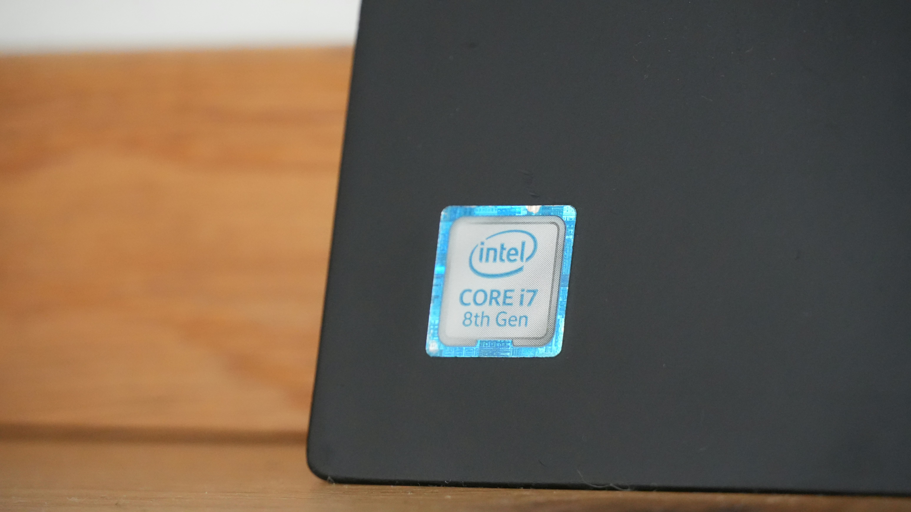

1968
Intel Founded

Robert Noyce and Gordon Moore rename the newly formed company NM Electronics to Intel Corporation.
This moment laid the foundation for decades of technological innovation.
Explore Intel's journey through time, discovering how our commitment to innovation has shaped a more sustainable future for technology and our planet.
Robert Noyce and Gordon Moore rename the newly formed company NM Electronics to Intel Corporation.
This moment laid the foundation for decades of technological innovation.

Intel debuts the 4004, the world's first commercial microprocessor.
This helped spark the microprocessor revolution and changed computing forever.

Launch of the 8086 processor, establishing the x86 architecture.
It became the base for countless PCs and servers in the modern era.

Intel introduces the 386 processor with 32-bit architecture.
This ushered in a new era of performance and multitasking.

Intel reaches its highest annual greenhouse gas emissions for operations.
Intel later invests heavily in renewable energy, abatement, and efficiency to reverse the trend.

Intel launches its RISE strategy and 2030 goals.
The strategy focuses on climate action, water stewardship, and waste reduction.

Intel commits to net-zero greenhouse gas emissions across global operations by 2040.
This builds on years of environmental initiatives and manufacturing improvements.

Intel reaches 99% renewable electricity usage worldwide.
This helps lower carbon emissions and supports long-term sustainability goals.

Intel hosts its first Sustainability Summit.
The summit brings together suppliers, officials, and industry leaders.
Scroll to view timeline | Hover over cards to learn more!